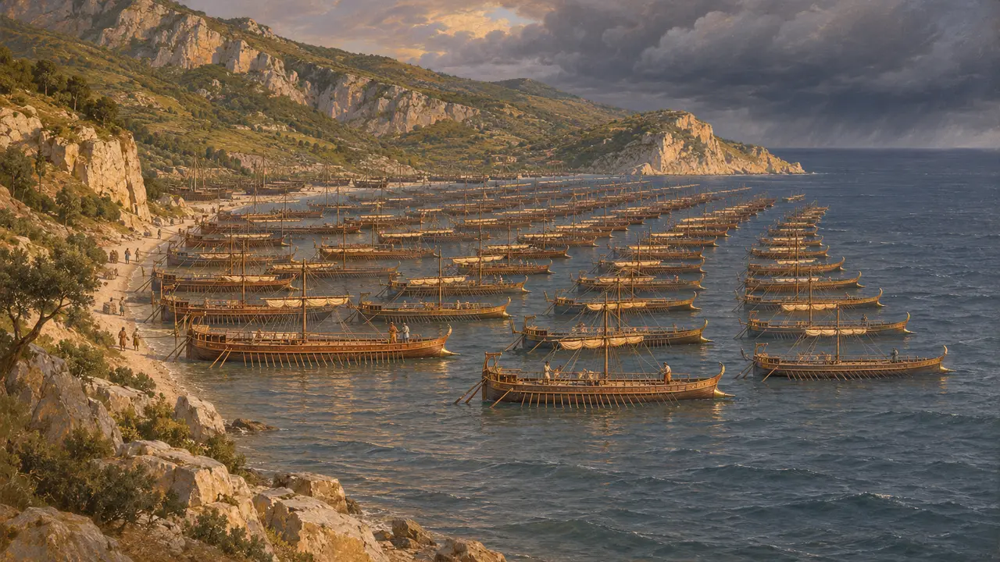
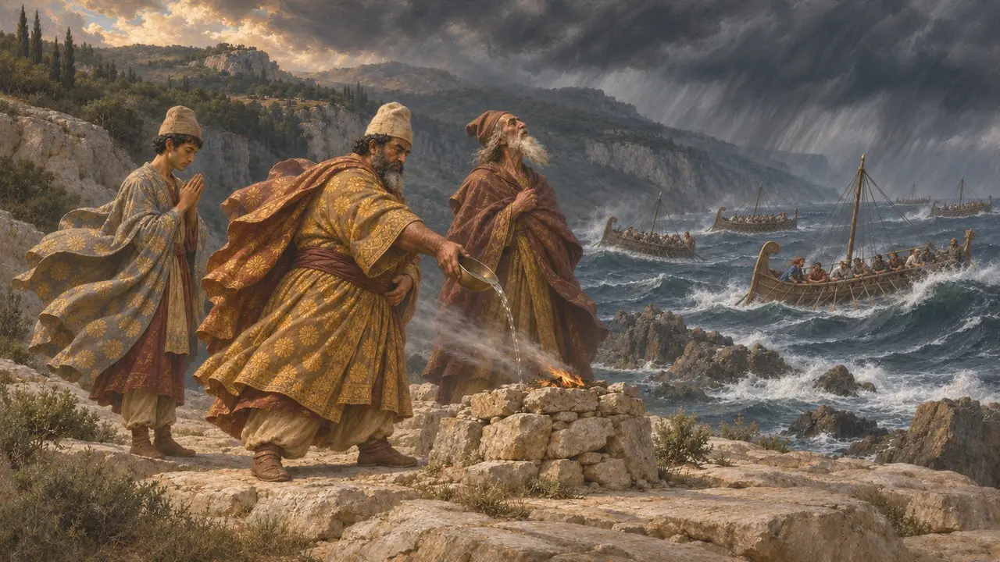
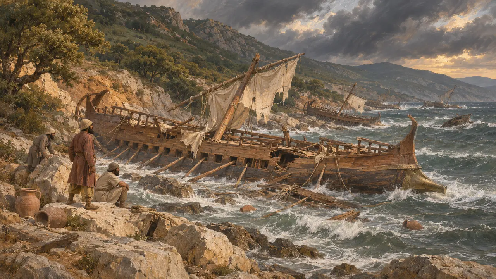
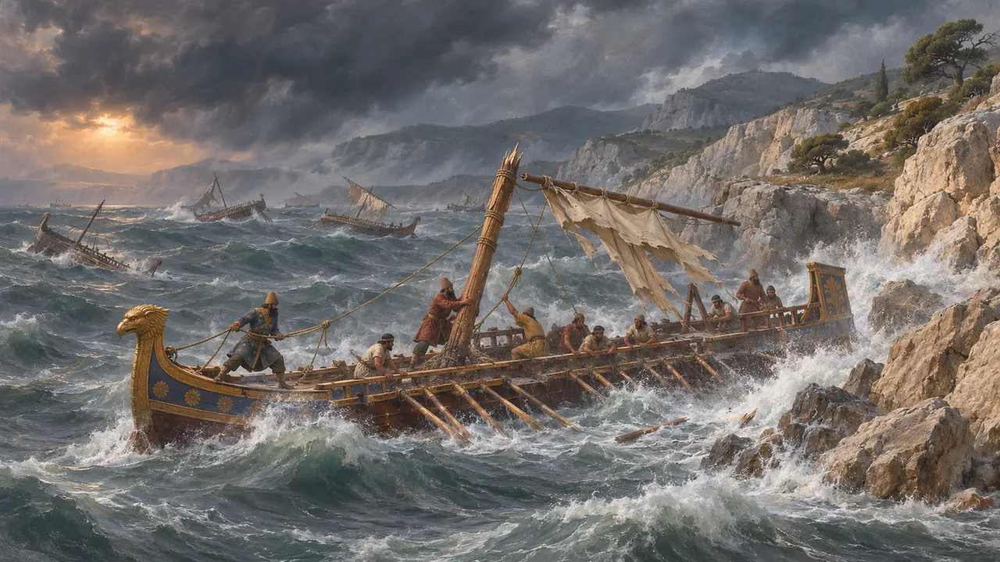
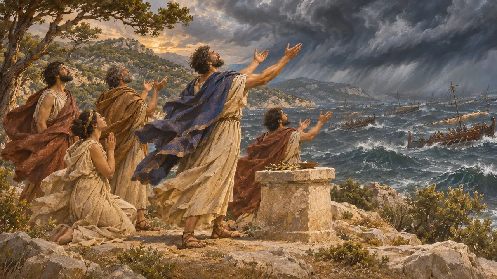

マグネシアはテッサリア東部の丘の多い沿岸地方で、パガサイ湾の東に位置し、ペリオン山を含む。ヘロドトスは、クセルクセスの艦隊に損害を与えた大嵐が紀元前480年にこの海岸を襲ったと記しており、それはアルテミシオンの戦いの少し前のことであった。この海岸は、それほどの大艦隊には十分な避難場所を与えなかった。
ゲームでは： 本作がマグネシアに言及するのは、年代記の項目と、百科事典の嵐に関する出来事の記事だけで、クセルクセスの艦隊が難破した海岸として登場します。レベルではなく、独自の仕組みもありません。

海岸とその停泊地
古代の記述ヘロドトスによれば、艦隊はカスタナイアの町とセピアス岬のあいだにあるマグネシアの岸に停泊した。ヘロドトスは、浜が狭かったため、船は舳先を海に向けて8列に係留され、残りはその後方で錨を下ろして停泊したと述べている。避難に適さない場所だったことが、嵐があれほど大きな被害をもたらした理由を説明している。
Herodotus 7.183

紀元前480年の嵐
古代の記述ヘロドトスによれば、東から激しい風が艦隊を襲い、3日間吹き荒れた。土地の人々はこの風を「ヘレスポントス風」と呼んだという。彼は、マギが風に、さらにテティスとネレイデスたちに犠牲を捧げ、4日目に風が収まったと伝えている。また、風は自然におさまったのかもしれないとも付け加えている。この嵐については、彼が主要な典拠である。
Herodotus 7.188-191

損害の規模
係争中ヘロドトスによれば、失われた軍船は400隻を下らず、多くの人命と財貨も失われたという。歴史家たちは艦隊の規模に関する彼の数字を疑っており、総数はおそらく誇張されているが、深刻な損失があったこと自体は疑われていない。彼は、エウボイア島のギリシア側の見張りが難破の知らせを伝えたと述べている。
Herodotus 7.190-192

エウボイア沖の第二の嵐
古代の記述ヘロドトスは、エウボイア島のコイラ(窪み)沖で起きた第二の嵐について語っている。この嵐は、ギリシア軍の退路を断つために島を迂回させたペルシアの分遣艦隊を壊滅させたという。彼によれば、ペルシア軍の数をギリシア軍に近づけるため、神が働いたのだという。したがってヘロドトスの語るところでは、この損失によって、アルテミシオンの戦いの前にペルシア側の優位は小さくなった。
Herodotus 8.13

ボレアスをめぐるアテナイの伝承
後世の伝説ヘロドトスによれば、アテナイ人は北風ボレアスを婚姻による縁者として呼び求め、ボレアスが嵐を送ってくれたのだと語っていた。ヘロドトス自身は、これが嵐の起きた理由かどうかは分からないと述べている。この話は神の救いをめぐるアテナイの伝承に属するものであり、嵐がどのようにして起きたかを示す証拠ではない。
Herodotus 7.189
出典
- Herodotus 7.183
- Herodotus 7.188-192
- Herodotus 8.13
- P. Briant, From Cyrus to Alexander, 2002